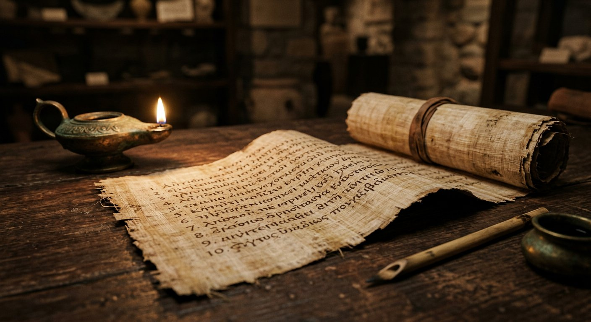

La Lettre d'Aristée
Résumé détaillé. Adressée par un certain Aristée à son frère Philocrate, la lettre décrit comment Démétrios de Phalère, responsable de la bibliothèque d'Alexandrie, persuade le roi de faire traduire les lois juives pour ses collections. Ptolémée libère les esclaves juifs du royaume, envoie une ambassade magnifique au Temple de Jérusalem ; Ééléazar choisit 72 sages et leur confie le rouleau de la Loi. Suit un banquet de sept nuits où les traducteurs répondent aux questions du roi — sagesse politique, philosophique, morale. Enfin, installés sur l'île de Pharos, ils comparent leurs versions, achevées en 72 jours, et les déclarent définitives. La Lettre donne aussi une description célèbre du Temple de Jérusalem et une apologie des lois alimentaires juives par l'allégorie. Un texte à la fois légendaire et historiquement précieux.